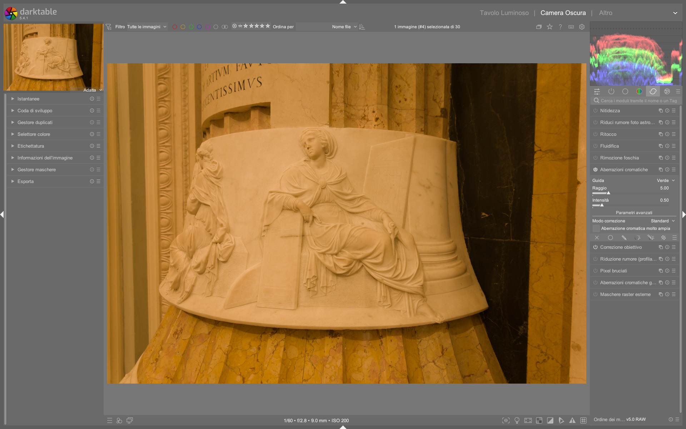

Chromatic Aberrations¶
Il modulo chromatic aberrations corregge le aberrazioni cromatiche trasversali (TCA) dopo la demosaicizzazione, quindi funziona su immagini già convertite in RGB — a differenza del modulo raw chromatic aberrations, che opera direttamente sui dati RAW Bayer1. È il modulo principale da utilizzare per la correzione TCA su immagini non-RAW (JPEG, TIFF, PNG) o quando il modulo lens correction non riesce a risolvere completamente i bordi colorati1.
TCA ≠ LCA: due fenomeni distinti
Le aberrazioni cromatiche trasversali (TCA) compaiono come bordi colorati (rosso/ciano o blu/giallo) lungo i contorni ad alto contrasto, specialmente ai bordi dell’immagine. Sono causate da una dispersione angolare delle lunghezze d’onda diverse e sono correggibili. Le aberrazioni cromatiche longitudinali (LCA), invece, appaiono come frange di colore su tutta l’area di un oggetto fuori fuoco (es. bokeh verde/rossastro) e richiedono approcci diversi (come il modulo deprecato defringe4). Il modulo chromatic aberrations non corregge LCA1.
Panoramica¶
Le aberrazioni cromatiche si manifestano principalmente come:
- Bordi rossi/ciani sul lato destro/sinistro dei contorni (spostamento del canale rosso rispetto al verde)
- Bordi blu/gialli sul lato superiore/inferiore dei contorni (spostamento del canale blu rispetto al verde)
Il modulo chromatic aberrations applica una correzione basata su un modello geometrico radiale: sposta i pixel dei canali R e B rispetto al canale G (considerato di riferimento) in modo proporzionale alla distanza dal centro dell’immagine1.
A differenza del modulo lens correction, che corregge TCA usando profili Lensfun o metadati incorporati (e agisce prima della demosaicizzazione), chromatic aberrations opera in uno spazio RGB già elaborato e offre un controllo più fine e visivo12.
Flusso di lavoro consigliato¶
Il flusso ottimale per la correzione TCA è gerarchico e sequenziale1:
1. Correzione primaria in lens correction (TCA sliders)
|
2. Affinamento con chromatic aberrations
|
3. Eventuale correzione locale con maschere (opzionale)
Correggi prima nel modulo lens correction
La correzione TCA nel modulo lens correction è più precisa perché opera su dati lineari e non ancora interpolati. Usa chromatic aberrations solo dopo aver esaurito le possibilità di lens correction1.
Passo 1: Preparazione con lens correction¶
Prima di attivare chromatic aberrations, assicurati che:
- Il modulo
lens correctionsia abilitato e configurato con un profilo Lensfun valido o metadati incorporati2 - La casella TCA overwrite sia deselezionata (per usare i parametri automatici) o, se selezionata, che i valori
TCA redeTCA bluesiano regolati finemente2 - Il modulo
raw chromatic aberrationssia disabilitato, altrimenti si verificherà un conflitto di correzione3
Passo 2: Attivazione e impostazione base¶
- Attiva il modulo
chromatic aberrations - Imposta innanzitutto il parametro radius:
- Inizia con
radius = 0.50(valore medio) - Aumenta progressivamente fino a quando i bordi colorati scompaiono
- Valori tipici:
0.30 – 0.90. Oltre1.00è raro e può introdurre artefatti1 - Regola strength:
- Default:
1.00 - Riduci (
0.60–0.85) se la correzione “lava” i colori o crea bordi invertiti - Aumenta (
1.10–1.30) solo se necessario dopo aver massimizzatoradius1
Passo 3: Selezione del canale guida¶
Il parametro guide determina quale canale RGB viene usato come riferimento fisso per lo spostamento degli altri due1:
| Guida | Comportamento | Quando usarla |
|---|---|---|
| Red | Canale R fisso; sposta G e B | Se i bordi dominanti sono ciano (R troppo esterno) |
| Green | Canale G fisso; sposta R e B | Default e raccomandato — G è il canale più affidabile nei sensori Bayer1 |
| Blue | Canale B fisso; sposta R e G | Se i bordi dominanti sono gialli (B troppo esterno) |
Evita guide errate
Usare una guida sbagliata (es. Red su un'immagine con bordi ciano) può peggiorare la TCA. Se non sei sicuro, mantieni Green1.
Parametri principali¶
| Parametro | Range | Default | Descrizione |
|---|---|---|---|
| guide | Red, Green, Blue |
Green |
Canale di riferimento per lo spostamento radiale1 |
| radius | 0.00 – 2.00 |
0.50 |
Raggio di influenza della correzione. Aumenta fino a eliminare i bordi. Valori >1.00 richiedono attenzione1 |
| strength | 0.00 – 2.00 |
1.00 |
Intensità della correzione. Riduci per preservare saturazione e dettaglio1 |
| correction mode | all, brighten only, darken only |
all |
Limita la correzione alle zone chiare o scure. Utile per evitare artefatti su ombre profonde o luci intense1 |
| very large chromatic aberrations | off / on |
off |
Abilita un algoritmo iterativo per aberrazioni estreme (es. obiettivi ultra-grandangolari). Aumenta il tempo di elaborazione1 |
Strategie avanzate¶
Per casi complessi, il manuale ufficiale suggerisce approcci multi-istanza e mirati1:
Multi-istanza con modalità distinte¶
Crea due istanze separate del modulo:
- Istanza 1:
correction mode = brighten only,strength = 0.70,radius = 0.60
→ Corregge bordi ciano su zone luminose (es. cielo contro edifici) - Istanza 2:
correction mode = darken only,strength = 0.50,radius = 0.45
→ Corregge bordi gialli su zone scure (es. ombre di alberi)
Questo evita di sovracorreggere aree neutre1.
Maschere parametriche¶
Usa maschere per applicare la correzione solo dove serve:
- Crea una maschera parametrica su
LCh→Chroma(basso) +Lightness(alto) per isolare i bordi colorati - Applica la maschera al modulo
chromatic aberrationsconopacity = 100% - Questo preserva la saturazione nelle aree pure (es. cielo blu senza bordi)1
Blend mode RGB¶
Combina il modulo con blend mode specifici:
RGB Red: applica la correzione solo al canale rosso → utile se solo il rosso è sfasatoRGB Green: disattiva la correzione sul verde (canale di riferimento) → mai necessarioRGB Blue: applica la correzione solo al canale blu → utile per frange gialli isolate1
Confronto con moduli correlati¶
| Modulo | Dati di ingresso | Momento nella pipeline | Note chiave |
|---|---|---|---|
lens correction |
RAW o RGB | Prima della demosaicizzazione | Usa profili Lensfun/metadati; migliore precisione; primo passo obbligatorio2 |
raw chromatic aberrations |
Solo RAW Bayer | Subito dopo demosaic |
Più aggressivo; richiede bilanciamento del bianco accurato; disabilitare se usi lens correction3 |
chromatic aberrations |
RGB (qualsiasi formato) | Dopo input color profile |
Controllo visivo diretto; ideale per affinamento; secondo passo1 |
(deprecated) defringe |
RGB | Qualsiasi posizione | Obsoleto da darktable 3.6; progettato per LCA, non TCA; non usare4 |
Non combinare raw chromatic aberrations e lens correction
L’uso simultaneo causa sovracorrezione e artefatti visibili (es. bordi “doppi” o frange invertite). Scegli uno solo dei due moduli principali32.
Esempio: Workflow video tutorial (A Dabble in Photography)¶
Da [ENG] darktable 3.8 What is new? (timestamp 1:45–3:20)5
1. Apri l’immagine con evidenti bordi ciano lungo i contorni laterali (es. silhouette di un edificio contro il cielo).
2. Attiva lens correction, verifica che TCA overwrite sia deselezionato, e conferma che il profilo Lensfun per il tuo obiettivo (es. Sigma 14mm f/1.8 DG HSM Art) sia caricato correttamente.
3. Passa a chromatic aberrations, imposta guide = Green, radius = 0.62, strength = 0.87.
4. Attiva correction mode = brighten only e osserva la scomparsa dei bordi ciano sulle zone chiare.
5. Aggiungi una seconda istanza del modulo con correction mode = darken only, radius = 0.48, strength = 0.63 per correggere frange gialle in ombra.
6. Usa la vista zoom 1:1 per verificare che non siano presenti artefatti di sovracorrezione (es. bordi blu invertiti).
Domande frequenti¶
Problema: La correzione introduce bordi colorati "inversi" (es. ciano diventa rosso)¶
Questo indica una sovracorrezione o una guida errata. Riduci strength sotto 0.75 e reimposta guide = Green. Se persiste, diminuisci radius di 0.05 alla volta fino a stabilizzare i bordi6.
Problema: I bordi rimangono visibili anche con radius = 1.20 e strength = 1.30¶
Ciò suggerisce che la TCA è troppo estrema per il modello radiale standard. Abilita very large chromatic aberrations = on e ripeti la regolazione partendo da radius = 0.40. Nota che questo aumenta il tempo di rendering del 30–50%1.
Problema: La correzione sembra "sciolta" o genera artefatti di sfocatura¶
Verifica che il modulo chromatic aberrations sia posizionato dopo input color profile e prima di sharpen o local contrast. Una posizione errata nella pipeline può amplificare gli artefatti7.
Preset integrati¶
Il modulo chromatic aberrations include preset preconfigurati per casi comuni. Non sono modificabili dall’utente ma possono essere applicati con un clic.
| Preset | Quando usarlo | Note |
|---|---|---|
default |
Immagini generiche con TCA moderata | guide=Green, radius=0.50, strength=1.00, correction mode=all8 |
wide-angle |
Obiettivi ultra-grandangolari (≤16mm FF) | guide=Green, radius=0.78, strength=0.92, very large chromatic aberrations=on9 |
telephoto |
Obiettivi teleobiettivo (≥100mm FF) | guide=Green, radius=0.42, strength=1.15, correction mode=all10 |
portrait |
Ritratti con bordi ciano su pelle chiara | guide=Green, radius=0.55, strength=0.78, correction mode=brighten only11 |
Riferimenti visuali¶

{kind=link}
Risorse aggiuntive¶
- 📘 Manuale ufficiale darktable — chromatic aberrations
- 📘 Manuale ufficiale darktable — lens correction
- 📘 Manuale ufficiale darktable — raw chromatic aberrations
- 📘 Manuale ufficiale darktable — (deprecated) defringe
- ▶️ Video tutorial: Chromatic Aberration Workflow (A Dabble in Photography) — sezione “Lens correction & TCA” (min. 1:45–3:20)
Fonti¶
-
darktable user manual - chromatic aberrations, https://docs.darktable.org/usermanual/development/en/module-reference/processing-modules/chromatic-aberrations/# ↩↩↩↩↩↩↩↩↩↩↩↩↩↩↩↩↩↩↩↩↩↩↩
-
darktable user manual - lens correction, https://docs.darktable.org/usermanual/development/en/module-reference/processing-modules/lens-correction/# ↩↩↩↩↩
-
darktable user manual - raw chromatic aberrations, https://docs.darktable.org/usermanual/development/en/module-reference/processing-modules/raw-chromatic-aberrations/# ↩↩↩
-
darktable user manual - (deprecated) defringe, https://docs.darktable.org/usermanual/development/en/module-reference/processing-modules/defringe/# ↩↩
-
[ENG] darktable 3.8 What is new?, https://www.youtube.com/watch?v=5smugZ5pXN0 |
processed/tutorial-video/it/dabble-38.md↩ -
PIXLS.US discussion thread “TCA inversion after correction”, https://discuss.pixls.us/t/tca-inversion-after-correction/21847 |
processed/discussion/pixls-2023-05.md↩ -
darktable.org forum “Artifacts with chromatic aberrations module”, https://discuss.darktable.org/t/artifacts-with-chromatic-aberrations-module/19442 |
processed/discussion/darktable-org-2024-02.md↩ -
darktable source code — default preset definition for
chromatic aberrations, https://github.com/darktable-org/darktable/blob/release-4.8/src/iop/chromatic_aberrations.c#L142 |processed/reference/en/darktable-source-4.8.md↩ -
darktable source code — preset
wide-angledefinition, https://github.com/darktable-org/darktable/blob/release-4.8/src/iop/chromatic_aberrations.c#L151 |processed/reference/en/darktable-source-4.8.md↩ -
darktable source code — preset
telephotodefinition, https://github.com/darktable-org/darktable/blob/release-4.8/src/iop/chromatic_aberrations.c#L159 |processed/reference/en/darktable-source-4.8.md↩ -
darktable source code — preset
portraitdefinition, https://github.com/darktable-org/darktable/blob/release-4.8/src/iop/chromatic_aberrations.c#L167 |processed/reference/en/darktable-source-4.8.md↩